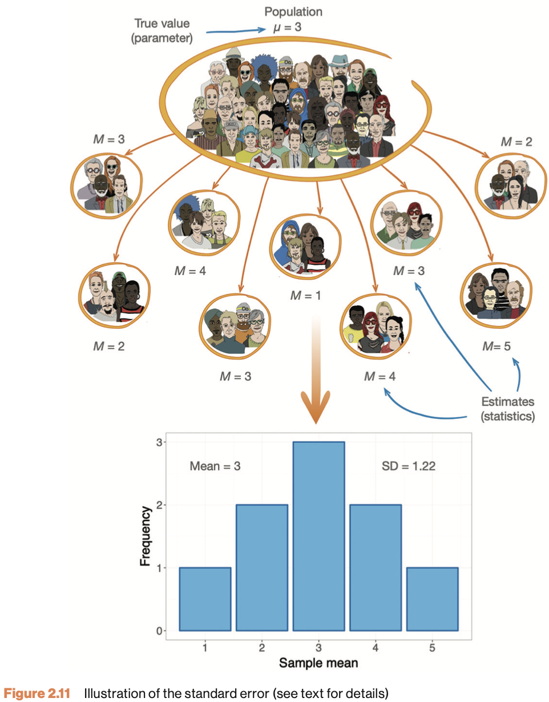

4. Statistical Reasoning
Null Hypothesis Testing
In this lecture we aim to:
- Introduce the S in SSR
- Repeat some stats concepts from RMS
- Introduce JASP
Learning
About SSR
- Book: Discovering Statistics Using JASP
- Many pages, but light content
- Difficulty indications in each section (A/B/C/D)
- Theory in first half, application in JASP in second half
- Companion website of book - Data sets
- Lectures
- Slightly erratic
- Starts with conceptual understanding
- Ends with JASP demonstration
- Confused?
- Read the chapter first
- Rewatch lecture
- Practice:
- Tutorials, WA in Ans
- Smart Alex tasks
- Labcoat Leni examples
- Self-test
Software
- JASP: main tool for analyses, data management
- Freely available at www.jasp-stats.org
- R: very flexible, very optional
- Freely available at https://cran.r-project.org/
- Want a nicer environment for coding? Try Rstudio
- Will be available during exam, but no required to use (can also use Ans calculator)
The Research Process
Sampling Variability

Next Time
- More Frequentist statistics
- Interactive applet
End
Contact